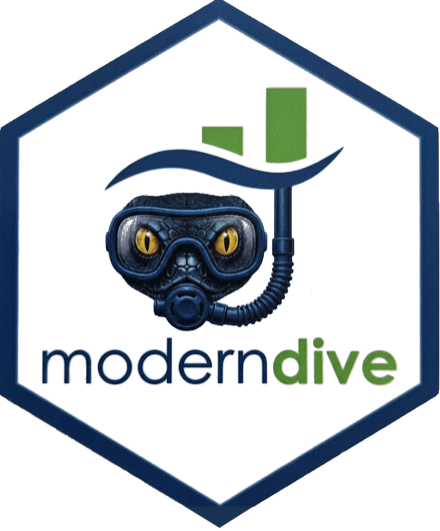
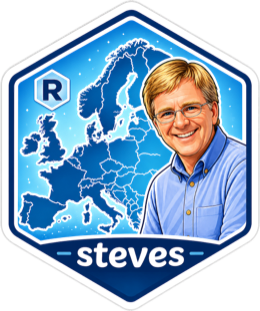
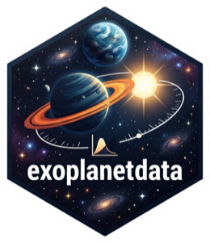

The book
Statistical Inference via Data Science
A free, open-source textbook by Chester Ismay, Albert Y. Kim, and Arturo Valdivia that teaches statistical inference the way it is practiced: starting from real data, wrangling and visualizing it, then building up to sampling, confidence intervals, hypothesis testing, and regression.
ModernDive, Second Edition
A ModernDive into R and the Tidyverse
The current edition, fully revised and freely readable online. Built around the tidyverse, infer, and moderndive packages, with exercises and real datasets throughout — also available in print from CRC Press.
Open development
The book is written in the open — file issues, suggest edits, or fork it.
Software
Companion packages for R and Python
The same tidy, simulation-first approach to inference and regression, in whichever language your course runs.
moderndive
Tidyverse-friendly introductory linear regression: get_regression_table(), get_regression_points(), wrapper functions designed for first courses, plus all datasets used in the book. Version 0.8.0 adds logistic regression support, correlations across several predictors at once, an interactive 3D regression plot, and a View() that works in Quarto and in the browser.

moderndive for Python
The Python companion: a tidy simulation-based inference grammar modeled on infer, regression helpers, the book's datasets, and dual-engine plotting with plotly and plotnine.
Data packages
Real datasets, ready to teach with
Tidy, documented R data packages in the spirit of nycflights13 — current enough that students recognize the world in them.
nycflights23
All outbound flights from New York City in 2023, with weather, planes, airports, and airline metadata.
nycflights22
All outbound flights from New York City in 2022 — pair with 2023 to study year-over-year change.
pnwflights22
Outbound flights from Seattle and Portland in 2022, for a Pacific Northwest take on the flights data.
azflights24
Outbound commercial flights from Arizona's primary airports in 2024, plus supporting metadata.
olympicAthletes
Every athlete-event in the modern Olympics, Athens 1896 through Milano-Cortina 2026 — about 315,000 rows.

steves
A tidy snapshot of every Rick Steves' Europe episode from 2000 to 2025, for teaching data analysis with a passport.

exoplanetdata
Confirmed exoplanets and their host stars from NASA's Exoplanet Archive, tidied for the classroom.
For instructors
Teach a course with ModernDive
Labs, problem sets, and instructor resources built to pair with the book — used in intro statistics and data science courses worldwide.
Labs & course materials
Ready-to-adapt lab exercises and resources for running a ModernDive-based course, openly available.
Instructor resources
Additional instructor-only materials for ModernDive v2 are available to verified instructors — sign up to request access.